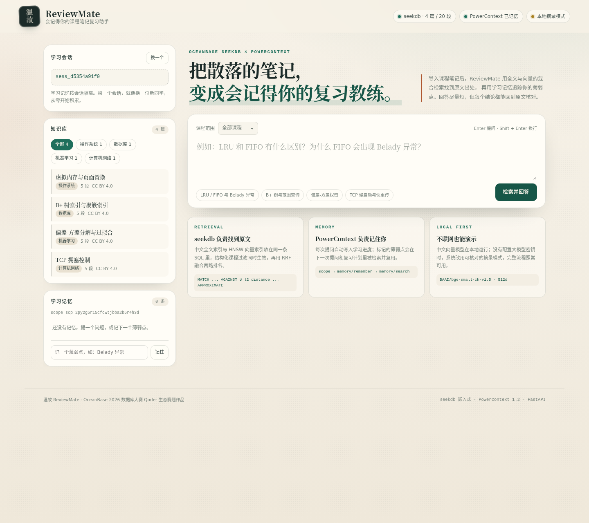
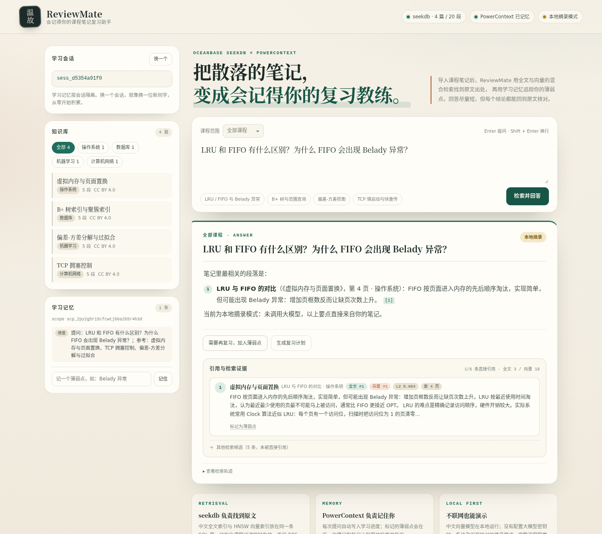
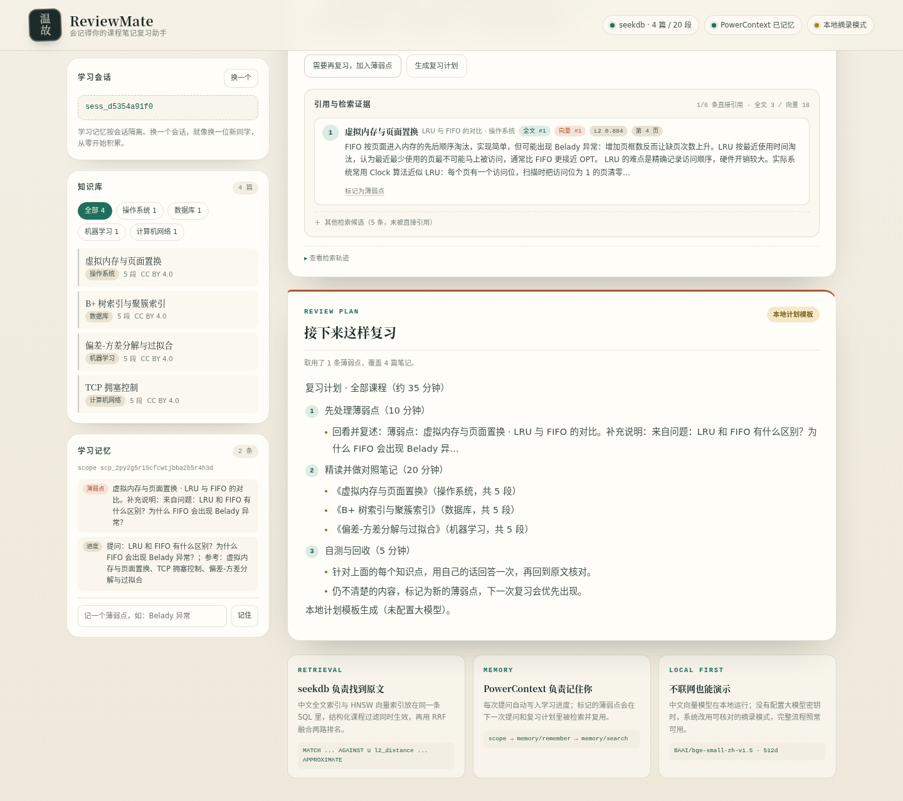
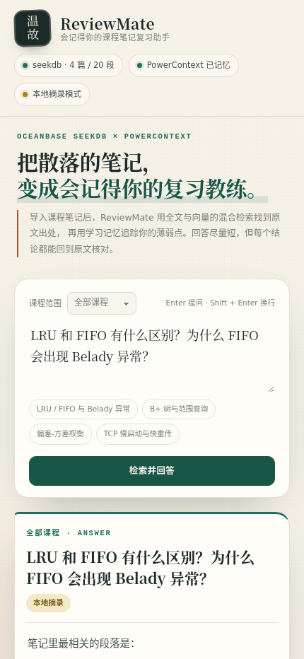

想不起关键词
只记得“那个换页算法”，纯关键词检索却什么也搜不到。
OCEANBASE 2026 · QODER 生态赛道
ReviewMate 把课程笔记导入 seekdb，用全文 + 向量的混合检索找回原文； PowerContext 记住你的每一次提问与薄弱点，下一次复习从上次停下的地方继续。

THE PROBLEM
笔记散落在多门课、多个文件里；搜到一句话，却不知道来自哪一页； 上次标记的薄弱点，换一个工具就丢了。
只记得“那个换页算法”，纯关键词检索却什么也搜不到。
大模型答得流畅，却无法回到笔记原文核对，复习不敢信。
薄弱点、进度、上次问过什么，散在聊天记录和脑子里。
THE LOOP
问“LRU 和 FIFO 有什么区别”，答案回到操作系统笔记第 4 页； 标记薄弱点后，复习计划把它排到第一步。



UNDER THE HOOD
UNION ALL SQL 同时跑 NGRAM 全文与 HNSW 向量MATCH(content) AGAINST(?)
UNION ALL
ORDER BY l2_distance(embedding, ?) APPROXIMATEscope → memory/remember → memory/search
→ memory/entries/list[PASS] 混合检索命中两路: 全文 3 条，向量 5 条
[PASS] 引用可回到原文: 第 4 页 · LRU 与 FIFO 的对比
[PASS] 自动记录提问
[PASS] 后续提问复用记忆: 命中 2 条历史记忆
[PASS] 复习计划读取薄弱点: 1 条薄弱点
[PASS] QA 日志可追溯
结果：12 通过 / 0 失败RUN IT YOURSELF
需要 Linux / WSL、Python 3.11+。首次运行需联网下载中文 embedding 模型，之后可离线。
python3 -m venv .venv
.venv/bin/python -m pip install -e ".[dev]"
cp .env.example .env
# 终端 A
make powercontext# 终端 B
make ingest
make serve
# 打开 http://127.0.0.1:8090make verify
make test
make lint
没有大模型 Key 也能完整运行：默认使用本地摘录回答，引用与原文定位不受影响。
配置 DEEPSEEK_API_KEY 后自动切换为生成的回答。
SOURCE & VERIFICATION
项目源码、4 篇样例笔记、12 项验收脚本、架构说明与 Qoder 开发记录一并提交。 配置示例只含占位值，不包含真实凭据。
qoder-reviewmate · 评审需授权